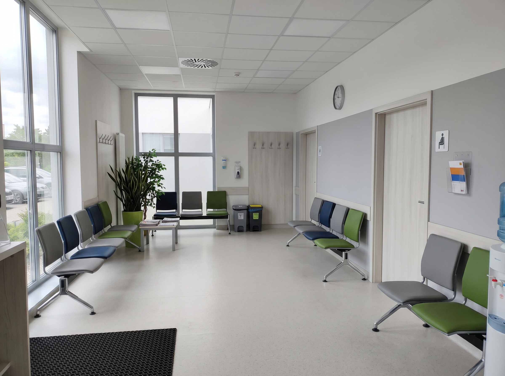

Prevencia, tehotenstvo aj ťažkosti s močením. Na jednom mieste.
MUDr. Ján Vzorový a sestra Eva Vzorová sa o vás postarajú diskrétne, s pochopením a s dlhoročnými skúsenosťami.
Vzorová 12, 080 01 Prešov · 5 minút pešo od autobusovej staniceS čím vám pomôžeme
Starostlivosť o ženy v každom období života, od preventívnej prehliadky cez tehotenstvo až po menopauzu.
Gynekológia a prevencia
Šetrné preventívne prehliadky, moderný ultrazvuk a komplexný skríning pre ženy v každom veku.
Tehotenstvo
Bezpečné vedenie tehotenstva, detailné ultrazvukové kontroly a citlivá starostlivosť v každom trimestri.
Únik moču a urgentné nutkanie
Presná diagnostika a moderná liečba samovoľného úniku moču či častého nutkania bez zbytočného čakania.
Zápaly močových ciest
Dlhodobá prevencia a cielená liečba opakovaných infekcií močového mechúra bez neustáleho užívania antibiotík.
Ordinačné hodiny
Vzorová 12, 080 01 Prešov
Poliklinika, 1. poschodie
Ukážková 5, 083 01 Sabinov
Ako prebieha návšteva u nás
Prísť s intímnym problémom chce odvahu. Všetko vám vopred vysvetlíme.
- 1
Rozhovor
Spýtame sa na ťažkosti a na to, čo vás najviac obmedzuje.
- 2
Vyšetrenie
Šetrné gynekologické vyšetrenie, podľa potreby ultrazvuk.
- 3
Vysvetlenie
Povieme vám, čo sa deje, zrozumiteľne a bez latinčiny.
- 4
Liečba a kontrola
Spoločne vyberieme liečbu. Výsledky vám pošleme e-mailom.
MUDr. Ján Vzorový
Sme tu pre vás v prípade akýchkoľvek zdravotných komplikácií. Naším hlavným cieľom je vaša spokojnosť a pevné zdravie. V rámci ordinačných hodín nás môžete navštíviť v dvoch špecializovaných ambulanciách:
Zdravotná sestra: Eva Vzorová
Recepty, pomôcky a výsledky
Počas ordinačných hodín sa venujeme pacientkam v ambulancii, preto telefón nie vždy zdvihneme. E-mail je rýchlejší.
- E-recept na lieky a vložky: napíšte e-mail s menom a dátumom narodenia.
- Výsledky vyšetrení: pošleme na vyžiadanie e-mailom.
- Zmenili ste poisťovňu? Dajte nám vedieť telefonicky, e-mailom alebo osobne.
Nadštandardné služby
Vyšetrenia hradené poisťovňou sú bezplatné. Za výhodnú cenu ponúkame aj:
Prostredie našej ambulancie
Príjemné priestory vytvorené tak, aby ste sa počas celej návštevy cítili pohodlne a bezpečne.



Časté otázky
Ako prebieha urogynekologické vyšetrenie? Bolí to?
Nemusíte mať žiadne obavy, vyšetrenie je nebolestivé a prebieha veľmi citlivo. Začína sa pokojným rozhovorom o vašich ťažkostiach (či už ide o únik moču pri kašli, športe, alebo náhle silné nutkanie). Nasleduje šetrné gynekologické vyšetrenie a neinvazívny ultrazvuk močového mechúra cez podbruško. Všetko vám vopred vysvetlíme a spoločne navrhneme riešenie.
Kedy je najvhodnejší čas prísť na preventívnu gynekologickú prehliadku?
Ideálny čas je v prvej polovici menštruačného cyklu, približne niekoľko dní po úplnom skončení menštruácie (medzi 8. až 14. dňom cyklu). V tomto období je cytologický ster z krčka maternice najpresnejší a ultrazvukový obraz sliznice maternice najprehľadnejší. V prípade akútnych ťažkostí (bolesti, silné krvácanie, zápal) však nečakajte a kontaktujte nás ihneď.
Ako k vám môžem prestúpiť od iného gynekológa?
Prestup je veľmi jednoduchý a bezstarostný. Stačí nám napísať cez formulár alebo zavolať a dohodneme si termín úvodnej návštevy. V ambulancii podpíšeme dohodu o poskytovaní zdravotnej starostlivosti. Vašu pôvodnú zdravotnú dokumentáciu od predošlého lekára si oficiálnou cestou vyžiadame sami, vy nemusíte nikam chodiť ani nič vybavovať.
Mám opakované zápaly močových ciest. Patrí tento problém ku urogynekológovi?
Jednoznačne áno. Ženský urologický a gynekologický trakt sú anatomicky aj funkčne úzko prepojené. Častou príčinou opakovaných zápalov býva narušená pošvová mikroflóra, hormonálne zmeny v menopauze alebo pokles panvového dna. Ako urogynekológ sa nepozerám len na baktérie v moči, ale hľadám skutočnú anatomickú a funkčnú príčinu, aby ste nemuseli neustále užívať antibiotiká.
Ako si môžem rýchlo vyžiadať e-recept na dlhodobo užívané lieky?
Najrýchlejšia cesta je odoslať žiadosť cez náš online formulár na webe (alebo e-mailom). Uveďte vaše celé meno, rodné číslo a presný názov liekov či inkontinenčných pomôcok. Recept vám odošleme do systému eZdravie spravidla do 24 hodín (počas pracovných dní) a lieky si môžete rovno vyzdvihnúť v ktorejkoľvek lekárni s kartičkou poistenca. Šetríte tým svoj čas aj čas pacientok vyšetrovaných v ambulancii.
Môžem sa prísť vyšetriť aj v prípade, že nemám slovenské zdravotné poistenie?
Áno, bežne ošetrujeme aj samoplatkyne či pacientky poistené v zahraničí (napríklad v Česku, Rakúsku, Nemecku či Veľkej Británii). Poskytujeme kompletnú preventívnu starostlivosť, tehotenskú poradňu aj špecializovanú diagnostiku. Všetky úkony sú spoplatnené podľa nášho transparentného cenníka priamych platieb a vystavíme vám doklad pre vašu zahraničnú poisťovňu.
Napíšte nám
Máte otázku alebo potrebujete informácie k vyšetreniu? Zanechajte nám správu a ozveme sa vám späť.
Zmluvné zdravotné poisťovne
Zdravotnú starostlivosť poskytujeme poistencom všetkých troch poisťovní